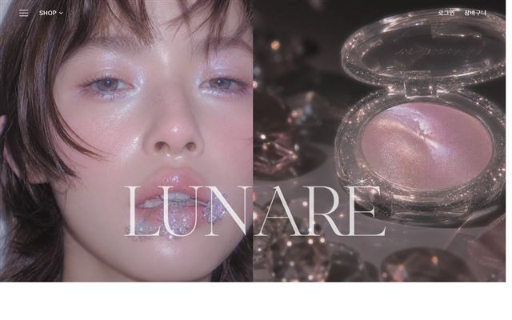
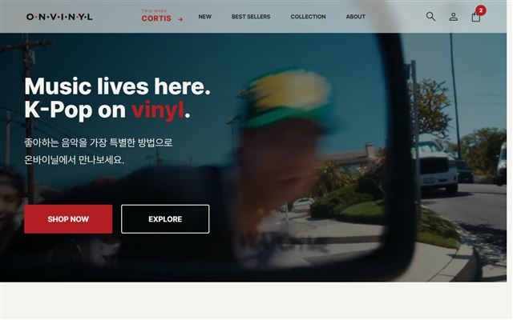
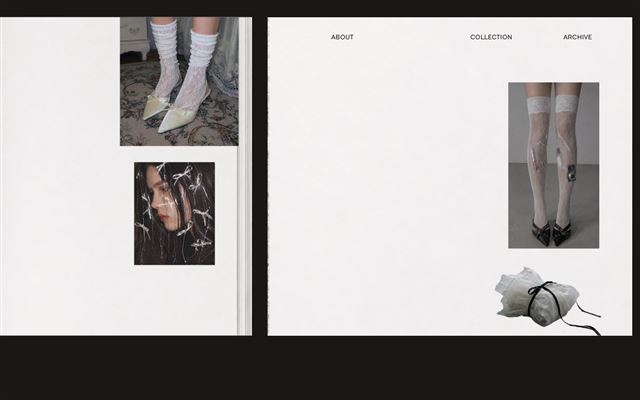
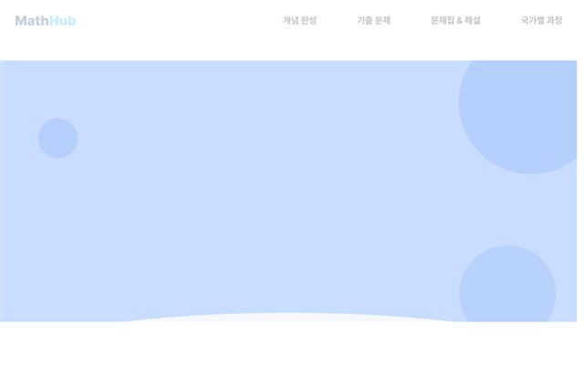
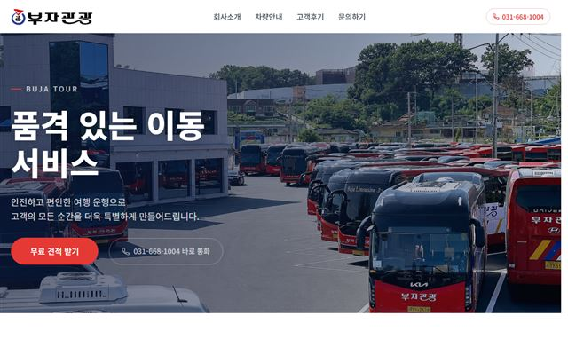
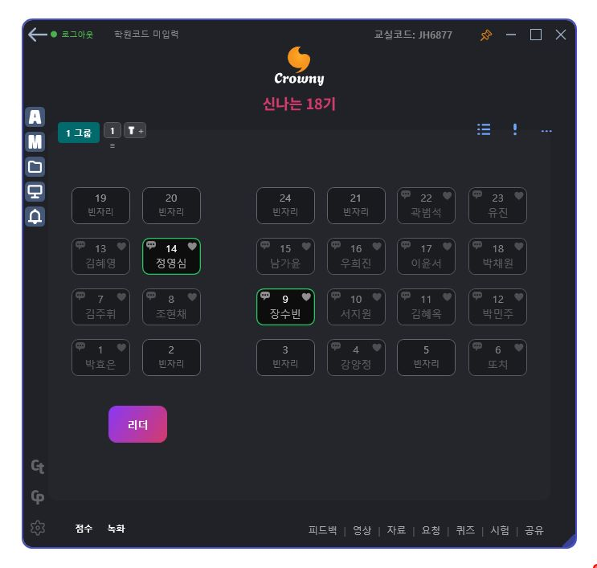

우리반 학생들의 작품
🎓 우리반이 AI로 만든 팀플 · 작품들
디자인을 배우고, 퍼블리싱을 배우고, 이쪽(UI/UX 제작) 시장에 대한 이해와 현실 감각을 익힌 다음
— 그 위에 AI를 적극적으로 활용해 만든 결과물입니다.
① 디자인 기초보는 눈을 먼저
→
② 퍼블리싱직접 만들 줄 알게
→
③ 시장·현실 감각UI/UX 제작 현장 이해
→
④ AI 활용속도와 완성도를 더하다
기초가 있는 사람이 AI를 쥐면 결과물의 격이 달라집니다 — 우리반의 작품이 그 증거입니다.
작품 모음


우리반 학생들의 작품 · 18기
🎓 18기 서지원
⏱️ 배운 기간 4/5개월
🟢 현재 활동중
🗣️ 강사의 학생 설명
학생 설명을 여기에 적어주세요.
📜 학생 이력
이력을 여기에 적어주세요.
🚀 현재 활동중인 사항
현재 활동을 여기에 적어주세요.

작품 모음


우리반 학생들의 작품 · 18기
🎓 18기 박민주
⏱️ 배운 기간 5개월
🟢 현재 활동중
🗣️ 강사의 학생 설명
학생 설명을 여기에 적어주세요.
📜 학생 이력
이력을 여기에 적어주세요.
🚀 현재 활동중인 사항
현재 활동을 여기에 적어주세요.
🔗 대표 포트폴리오 — 링크 주소를 여기에

작품 모음






제작 의도 · Crowny Class
나는 무엇을, 왜 만들었나
🖥️ 무엇을 만들었나
학원 강사가 학생 수십 명을 화면 하나로 관리하는 교실 관리 프로그램.
좌석·화면 모니터링·파일 전송·퀴즈·상담·결제까지 — 교실의 모든 상호작용을 앱 하나로.

🎯 왜 만들었나
자료는 USB·카톡, 출석은 종이, 화면 단속은 발로, 시험은 출력 — 프로그램 대여섯 개 + 수작업의 연속이었습니다. 강사 한 명이 학생 수십 명을 케어하면서도 수업 자체에 집중할 수 있게, 흩어진 도구를 하나로 모았습니다.
원칙 — "있으면 좋은 기능"이 아니라 "없어서 아팠던 기능"만 만든다.
학원 · 강사 · 학생을 하나로 잇는 구조
🏫 학원운영·관리
→
👩🏫 강사Crowny Class로 수업
→
🧑🎓 학생케어 받음
↑ 학생의 활동·피드백이 강사·학원으로 다시 모입니다
제작 기간과 규모
7개월
총 제작 기간 (진행 중)
3,900+
커밋(코드 변경 기록) 수
— 작은 개선의 누적
— 작은 개선의 누적
30개
기능 수
강사앱 + 학생앱 + 웹
강사앱 + 학생앱 + 웹
16개
지원 언어 (다국어)
2 + 1
데스크톱 앱 2개(강사·학생)
+ 웹(crownyclass.com)
+ 웹(crownyclass.com)
매일
실제 교실에서 검증
— 쓰면서 고치는 개발
— 쓰면서 고치는 개발
한 번에 만든 게 아닙니다. 작은 기능을 수백 번 반복해서 붙인 결과입니다.